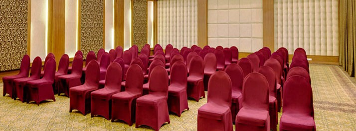

MICE
(Meetings, Incentives, Conventions and Exhibitions)
Meetings, Incentives, Conventions and Exhibitions (MICE) Market is one of the most exciting and fast growing segmentt in hand trade. Trends indicate that travel agents, tour operators, hotel companies, cruise companies are all eyeing the Rajasthan MICE market as one with great potential for future growth. The sheer size of this market and its tremendous capacity makes it both significant and lucrative.

Rajasthan offers a wide choice of convention centres. You can choose from well-connected cities like Jaipur, Jodhpur and Udaipur to small venues which could be historical or even wildlife sanctuaries depending on your liking. Rajasthan can also arrange for conventionalizing theme conferences.
